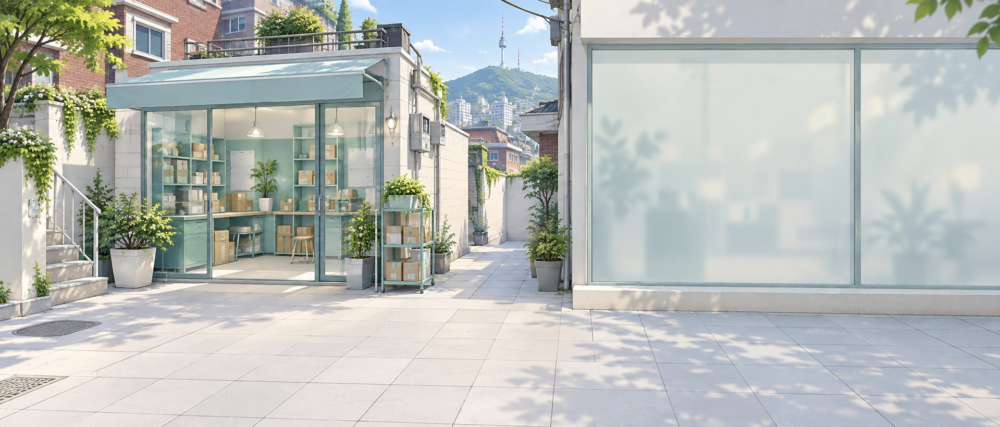
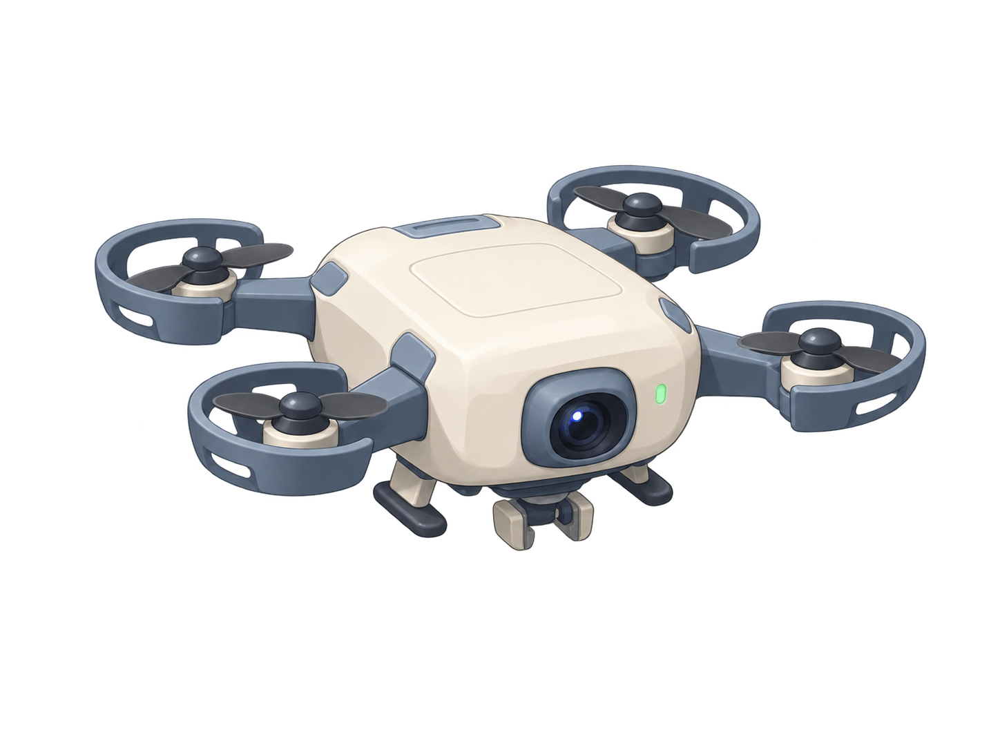
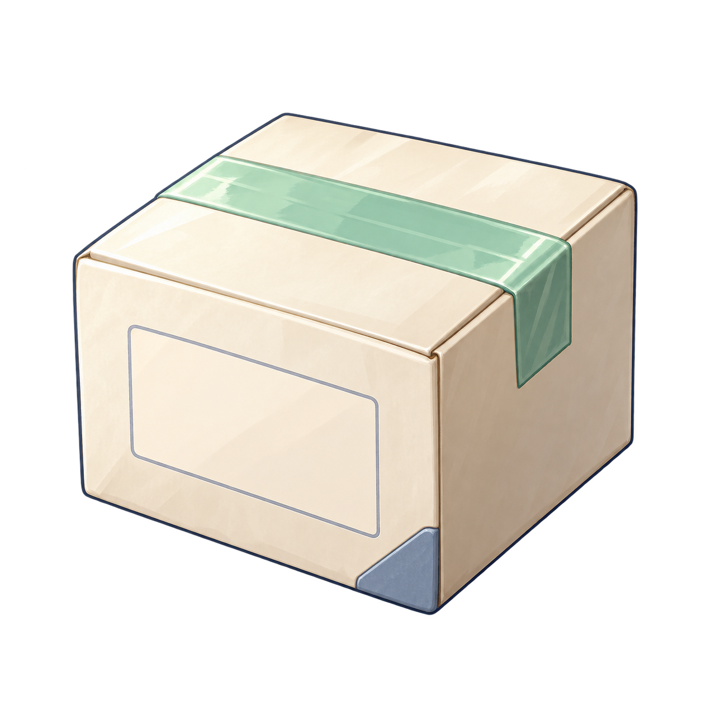
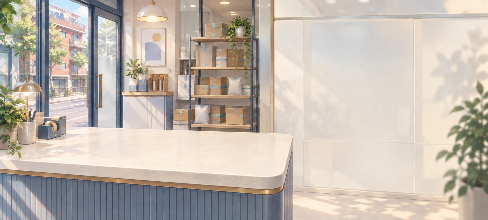
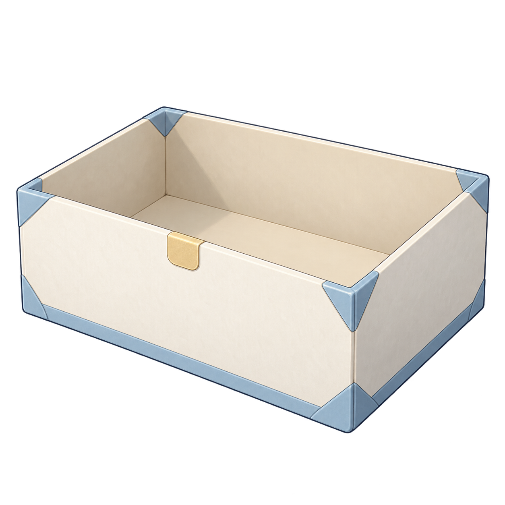
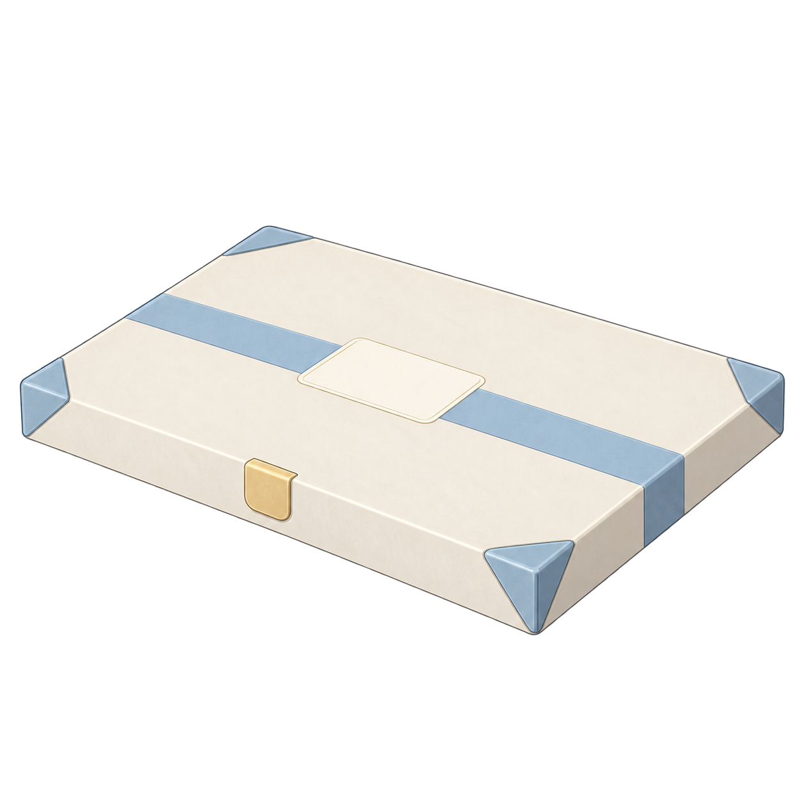
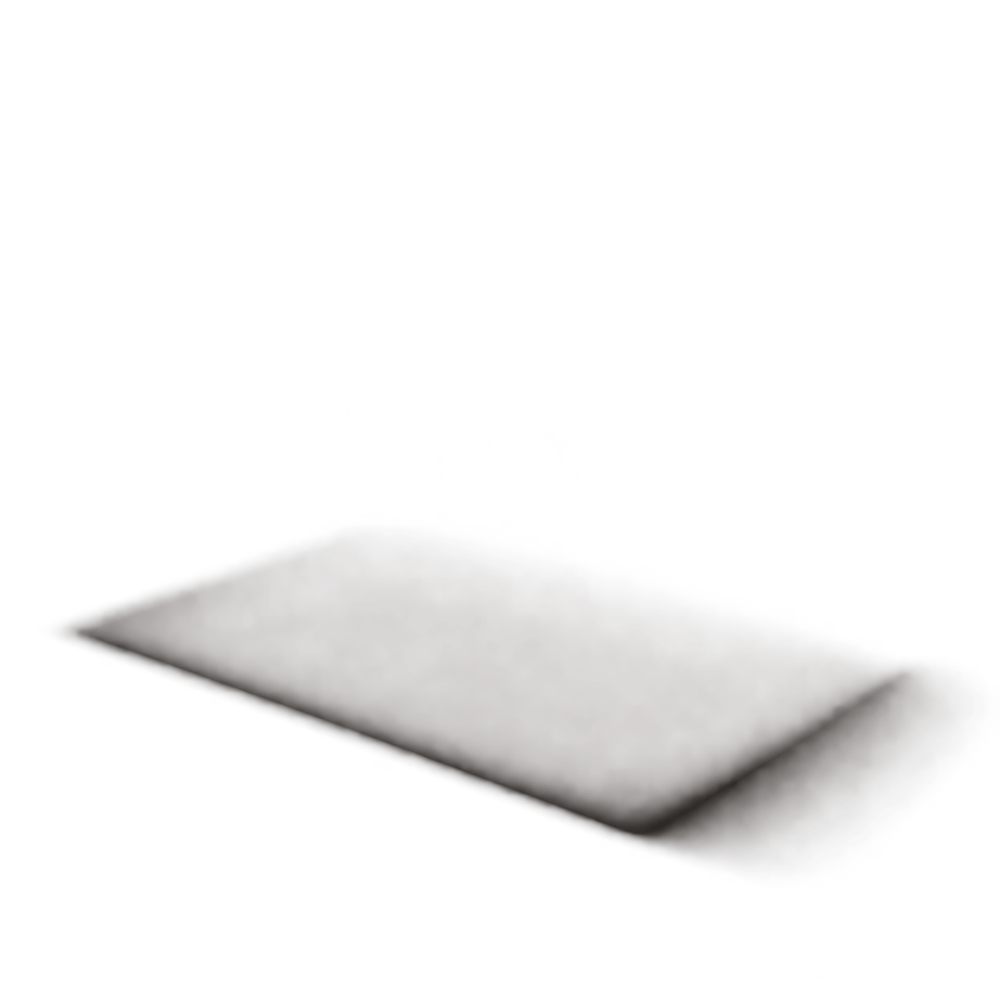
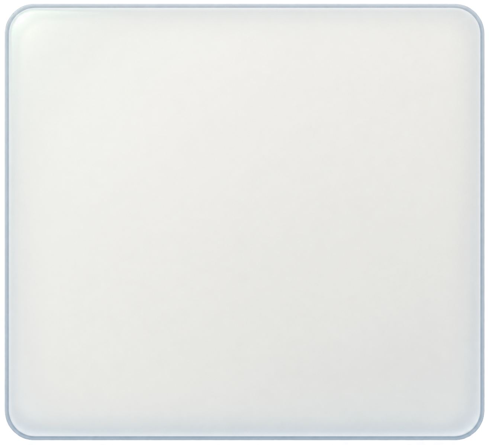

지면에 놓인 패키지와 낮게 부유하는 드론
패키지는 바닥에 안정적으로 놓이고 드론만 낮게 부유합니다. 느린 표시등 변화와 함께 글자·정보판은 고정됩니다.

2026.10.05 · SEOUL SUPPORT 01 · APPROVED RUNTIME 03
접지감을 개선한 Revision 02를 회수·보급의 실제 운영 화면에 연결했습니다. 작은 드론과 바닥 패키지, 데스크에 놓인 가벼운 보급 상자를 현재 아이보리·유리 UI와 함께 사용합니다.
APPROVED RUNTIME 03 · 실제 게임 연결 완료
승인한 접촉 그림자·패키지 위치·낮은 드론 부유를 실제 회수 화면에 적용했습니다. 실제 대기 보상은 오른쪽 정보판에 표시하고, 수령 성공 후 완료 상태로 갱신합니다.

패키지는 바닥에 안정적으로 놓이고 드론만 낮게 부유합니다. 느린 표시등 변화와 함께 글자·정보판은 고정됩니다.
수령 콜백이 성공한 뒤 짧은 착지 마무리와 작은 획득빛을 표시합니다. 이 캡처의 콜백은 실제 저장·지급을 차단한 고정 검토 상태입니다.

APPROVED RUNTIME 03 · 실제 게임 연결 완료
데스크와 닿는 그림자·분리 뚜껑·내부빛을 실제 보급 화면에 적용했습니다. 기존 1회·10회 개봉과 실제 결과 표시를 유지하며, 개봉 중에는 두 버튼의 중복 요청을 막습니다.

봉인 표시등의 은은한 변화만 보여줍니다.

봉인 해제 → 분리된 뚜껑 열림 → 내부빛 → 결과 등장. 실제 게임은 이미 지급·저장한 추첨 결과를 표시하며, 이 캡처는 지급을 차단한 고정 결과입니다.

개봉 연출은 한 번만 진행하고 묶음 결과를 보여줍니다. 실제 게임은 10회 추첨 결과를 사용하며, 캡처에서는 추첨·소비·지급을 하지 않습니다.

실제 화면 클래스에서 빈 보상·수령 완료·보급권 부족·1회 및 10회 결과를 비교합니다. 아래 수량과 결과는 지급·저장이 없는 검토용 상태입니다.


승인 시안을 별도로 보존했습니다. 위의 실제 화면과 원화·접지감·배치를 비교할 수 있습니다.


공중에 떠 보였던 첫 시안도 보존했습니다. 승인된 접촉 그림자·패키지 위치·드론 높이와 비교할 수 있습니다.


색감·무게감·장면 구성의 변화를 비교하기 위한 보존 캡처입니다.


아래는 실제 화면에서 사용한 분리 PNG입니다. 기능 글자는 이미지에 구워 넣지 않고 Godot에서 렌더링했습니다.







